Fundamentos del CEA: Valoración de costos
Objetivos de aprendizaje y esquema
Objetivos de aprendizaje
Identificar las diferencias teóricas y metodológicas entre diferentes técnicas de evaluación económica
Comprender los fundamentos del análisis costo-efectividad
Describir los pasos para valorar los costos en las evaluaciones económicas & identificar las formas de seleccionar los parámetros de costos
Esquema
- Introducción a las evaluaciones económicas
- Valoración de costos
Introducción a las evaluaciones económicas
Hasta aquí…
Hemos tocado el marco básico del análisis de decisiones, centrándonos en:
Árboles de decisión y probabilidades
Teorema de Bayes & la importancia de incorporar información en las pruebas, incluido el valor de esta información adicional
Umbrales de tratamiento y construcción de árboles de decisión en distintos programas de software
Today…
- Tocaremos algunos de los conceptos básicos para representar costos y beneficios para la salud en los problemas de decisión
Evaluación económica
Relevante cuando las alternativas de decisión tienen diferentes costos y consecuencias para la salud.
Queremos medir el valor relativo de una estrategia en comparación con otras.
Esto puede ayudarnos a tomar decisiones de asignación de recursos ante limitaciones (por ejemplo, presupuestarias).

Características de la evaluación económica
- Cuantificación sistemática de costos y consecuencias.
- Análisis comparativo de cursos de acción alternativos. de acción.
- Nos centraremos en esto en la próxima sesión.
Técnicas de evaluación económica
| Tipo de estudio | Medición/valoración de costos | Identificación de consecuencias | Medición / valoración de consecuencias |
|---|---|---|---|
| Análisis de costos | Unidades monetarias | Ninguno | Ninguno |
Fuente: [@drummond2015a]
Análisis de costos
Sólo tiene en cuenta los costos sanitarios
Relevante cuando las opciones alternativas son igual de eficaces (proporcionan beneficios iguales)
- Raras veces es así en la realidad
Los costos se valoran en términos monetarios (por ejemplo, dólares estadounidenses)
Criterio de decisión: normalmente, minimizar el costo
Técnicas de evaluación económica
| Tipo de estudio | Medición/Valoración de costos ambas alternativas | Identificación de consecuencias | Medición/Valoración de consecuencias |
|---|---|---|---|
| Análisis de costos | Unidades monetarias | Ninguno | Ninguno |
| Análisis costo-efectividad | Unidades monetarias | Efecto único de interés, común a ambas alternativas, pero alcanzado en diferentes grados. | Unidades naturales (por ejemplo, años de vida ganados, días de incapacidad ahorrados, puntos de reducción de la presión arterial, etc.) |
Fuente: [@drummond2015a]
Análisis Costo-Efectividad (ACE)
Más útil cuando los responsables de la toma de decisiones consideran múltiples opciones dentro de un presupuesto, y el resultado relevante es común a todas las estrategias
- Los costos se valoran en términos monetarios ($)
- Los beneficios se valoran en términos de resultados clínicos (por ejemplo, casos prevenidos o curados, vidas salvadas, años de vida ganados, años de vida ganados ajustados a la calidad)
- Los resultados se presentan como una relación costo-efectividad
Análisis Costo-Efectividad
Supongamos que nos interesa la prolongación de la vida tras una intervención.
Resultado de interés: años de vida ganados.
El resultado es común a las estrategias alternativas; sólo difieren en la magnitud de los años de vida ganados.
Podemos presentar los resultados en términos de $/años de vida ganados
Técnicas de evaluación económica
| Tipo de estudio | Medición/valoración de los costos de ambas alternativas | Identificación de las consecuencias | Medición/valoración de las consecuencias |
|---|---|---|---|
| Análisis de costos | Unidades monetarias | Ninguno | Ninguno |
| Análisis costo-efectividad | Unidades monetarias | Efecto único de interés, común a ambas alternativas, pero alcanzado en diferentes grados | Unidades naturales (por ejemplo, años de vida ganados, días de incapacidad ahorrados, puntos de reducción de la presión arterial, etc.) |
| Análisis costo-utilidad | Unidades monetarias | Efectos únicos o múltiples, no necesariamente comunes a ambas alternativas. | Años de vida con buena salud (medidos normalmente como años de vida ajustados por calidad) |
Fuente: [@drummond2015a]
Análisis Costo-Utilidad
- Esencialmente una variante del análisis costo-efectividad.
- Característica principal: uso de medida genérica de salud.
- Año de vida ajustado por calidad (AVAC): Una métrica que refleja tanto como la calidad de vida (dolor, función o ambos).
- Es la forma de evaluación económica más publicada.
A lo largo del taller nos centraremos principalmente en el ACE (especialmente en el ACU).
Técnicas de evaluación económica
| Tipo de estudio | Medición/valoración de costos ambas alternativas | Identificación de consecuencias | Medición/valoración de consecuencias |
|---|---|---|---|
| Análisis de costos | Unidades monetarias | Ninguno | Ninguno |
| Análisis costo-efectividad | Unidades monetarias | Efecto único de interés, común a ambas alternativas, pero alcanzado en diferentes grados | Unidades naturales (por ejemplo, años de vida ganados, días de incapacidad ahorrados, puntos de reducción de la presión arterial, etc.) |
| Análisis costo-utilidad | Unidades monetarias | Efectos únicos o múltiples, no necesariamente comunes a ambas alternativas | Años de vida saludable (medidos normalmente como años de vida ajustados por calidad) |
| Análisis costo-beneficio | Unidades monetarias | Efectos únicos o múltiples, no necesariamente comunes a ambas alternativas | Unidades monetarias |
Análisis Costo-Beneficio
- Relevante para la asignación de recursos entre sanidad y otras áreas (por ejemplo, la educación)
- Los costos y las consecuencias para la salud se valoran en términos monetarios (p. ej, dólares estadounidenses).
- La valoración de las consecuencias sanitarias en términos monetarios ($) se obtiene estimando la disposición de los individuos a pagar para salvar vidas o mejorar la salud.
- Por ejemplo, en EE.UU. se estima que el valor por vida estadística es de 9 millones de dólares.
- Criterio costo-beneficio: los beneficios de un programa son superiores a sus costos.
- Obsérvese que no estamos haciendo comparaciones entre estrategias, sólo comparaciones de costos y beneficios de la misma estrategia. estrategia]{style=“background-color: yellow;”}
- Para saber más: Robinson et al, 2019
Análisis Costo-Beneficio
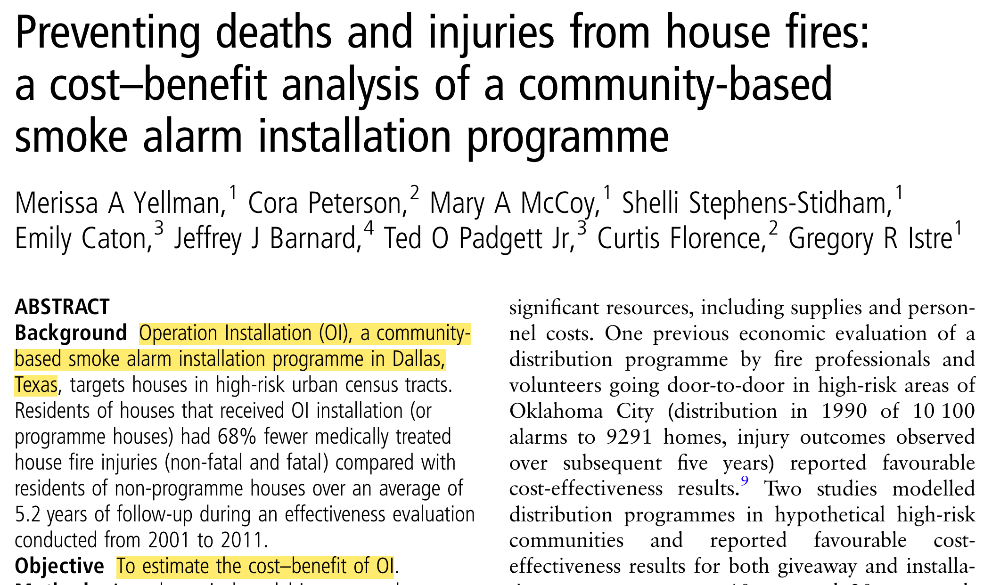https://pubmed.ncbi.nlm.nih.gov/28183740/
Análisis Costo-Beneficio
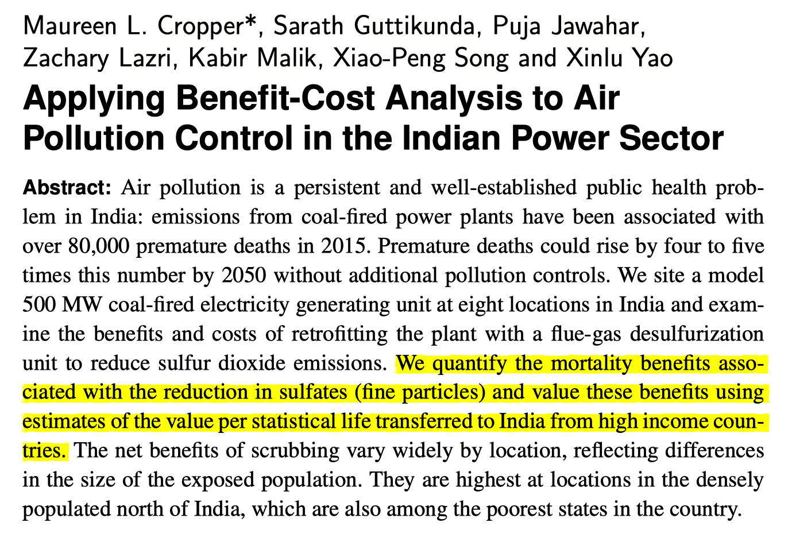https://www.cambridge.org/core/product/identifier/S2194588818000271/type/journal_article
¡Volvemos al Análisis Costo-Efectividad!
- Relevante cuando las alternativas sanitarias tienen diferentes costos y consecuencias para la salud consecuencias para la salud
\frac{\text{(Costo Intervención A - Costo Intervención B)}}{\text{(Beneficio A - Beneficio B)}}
- El VALOR relativo de una intervención en comparación con su alternativa se expresa en forma de RELACION costo-efectividad (¡el tema central de la próxima sesión)
¿Quién utiliza las evaluaciones económicas?
Comités Asesores de Tecnología Sanitaria
NICE (The National Institute for Health and Care Excellence, REINO UNIDO)
Agencia de Medicamentos y Tecnología Sanitaria de Canadá (Drug and Health Technology Agency)
PBAC (Comité Asesor sobre Beneficios Farmacéuticos en Australia)
Instituto de evaluación de tecnologías sanitarias de Brasil.
Grupos que elaboran directrices clínicas
OMS
CDC
Organizaciones de enfermedades específicas: Sociedad Americana del Cáncer Asociación Americana del Corazón; Organización Europea del Ictus
Agencias reguladoras:
FDA (Administración de Alimentos y Medicamentos de EE.UU.)
EPA (Agencia de Protección del Medio Ambiente de Estados Unidos)
CEAs: Identificación de alternativas
Identificación de alternativas
La modelización de decisiones/evaluación económica requiere identificar estrategias o cursos de acción alternativos.
Estas alternativas podrían incluir diferentes terapias / políticas / tecnologías.
O bien, nuestras alternativas podrían abarcar diferentes combinaciones o secuencias de tratamiento (por ejemplo, ¿qué dosis? ¿a qué edad empezar?).
Una vez que hayamos identificado las alternativas, queremos cuantificar sus consecuencias en términos de:
Resultados sanitarios
Costos
Componentes del ACE
\frac{\text{(Costo Intervención A - Costo Intervención B)}}{\text{(Beneficio A - Beneficio B)}}
Valoración de costos
Valoración de costos: Pasos
Fuente: Gold 1996, Drummond 2015, Gray 2012)
Identificar – Estimar las diferentes categorías de recursos probablemente necesarios (por ejemplo, personal quirúrgico, equipo médico, complicaciones quirúrgicas, reingresos)
Medir – Estimar qué cantidad de cada categoría de recursos (por ejemplo, tipo de personal que realiza la intervención implicado, duración de la estancia postoperatoria, tasas de reingreso)
Valor – Aplicar costos unitarios a cada categoría de recursos (por ejemplo, escalas salariales del hospital correspondiente o tarifas salariales nacionales para salarios del personal, costo por día de hospitalización para la estancia)
Podemos identificar diferentes tipos de costos sanitarios
Costos sanitarios directos
Hospital, consultorio, hogar, instalaciones
Medicamentos, procedimientos, pruebas, honorarios profesionales
Costos directos no sanitarios**]{style=“color: #57886C”}
- Cuidado de niños, gastos de transporte
Costos de tiempo**]{style=“color: #57886C”}
- Tiempo del paciente recibiendo atención, costo de oportunidad del tiempo
Costos de productividad (‘costos indirectos’)**]{style=“color: #57886C”}
¿Pérdida de la capacidad laboral por morbilidad?
¿Pérdida de productividad económica por fallecimiento?
Costos sanitarios no relacionados**]{style=“color: #57886C”}
- Trayectoria acumulada de los costos sanitarios totales a lo largo del tiempo (no relacionados con intervenciones médicas)
Identificación de costos (continuación)
En la práctica, contamos lo que probablemente tenga importancia
- Excluimos lo que probablemente tenga poco efecto o efectos iguales en todas las alternativas
Hay que tener en cuenta cualquier exclusión y examinar los posibles sesgos
Estamos limitados por los datos disponibles
Podemos medir los costos utilizando diferentes enfoques
Microcostos (“bottom-up”)
- Medir todos los recursos utilizados por los pacientes individuales y, a continuación, asignar el costo unitario a cada tipo de recurso consumido para calcular el costo total
Costo bruto (“top-down”)
- Estimar el costo para un volumen determinado de pacientes dividiendo el costo total por el volumen de uso del servicio
- Ejemplo: Costos descendentes (por ejemplo, hospitalización por sobredosis de opiáceos) sobredosis de opiáceos)
Enfoque basado en los ingredientes (P x Q x C)
Probabilidad de ocurrencia (P)
Cantidad (Q)
Costos unitarios (C)
¿Perspectiva de quién?
Sanders GD, Neumann PJ, Basu A, et al. Recommendations for Conduct, Methodological Practices, and Reporting of Cost-effectiveness Analyses: Second Panel on Cost-Effectiveness in Health and Medicine. JAMA. 2016;316:1093–1103.](images/paste-1BA51D60.png)
¿La perspectiva de quién?
LA PERSPECTIVA IMPORTA –
Sector sanitario formal: Los costos médicos cobrados a asugradores/pagadores y pagos del bolsillo por los pacientes. Deben incluir los costos actuales y futuros relacionados y no relacionados con la condición considerada.
Perspectiva social: Representa el “interés público” más amplio y la distribución intersectorial de los recursos que es importante tener en cuenta. Refleja los costos de todas las partes afectadas.
¿La perspectiva de quién? {
}
Perspectiva del sector sanitario
MAMOGRAFÍA (Sector sanitario):
Costos asociados al tamizaje en sí [procedimiento mamografía + tiempo del médico]
Costos de las pruebas de seguimiento para falsos positivos y verdaderos positivos
Costos (o ahorros) derivados de los casos de cáncer de mama, como hospitalización + costos de tratamiento
Costos no relacionados con la intervención médica/enfermedad; de vivir más tiempo debido a la mamografía
¿Perspectiva de quién?
Perspectiva social
MAMOGRAFÍA (Perspectiva social):
Costos asociados al tamizaje en sí [procedimiento de mamografía + tiempo del médico]
Costos de las pruebas de seguimiento tanto para falsos positivos como para verdaderos positivos
Costos (o ahorros) derivados de los casos de cáncer de mama, como hospitalización + costos de tratamiento
Costos no relacionados con la intervención médica/enfermedad; de vivir más tiempo debido a la mamografía
Pérdidas de productividad de los pacientes asociadas al tamizaje o al tratamiento del cáncer]{style=“background-color: yellow;”}
Costos de guardería/transporte]{style=“background-color: yellow;”}
Recogida de datos
Dos enfoques:
(1) Junto a ensayos clínicos
(2) Utilizando datos secundarios
Costos (datos secundarios)
Internacional frente a EE.UU. tendrá diferentes enfoques
Costos (internacionales)
- En los registros de datos de países/hospitales/donantes - la clave es acercarse lo más posible al costo “real” asociado a cada procedimiento por paciente.
- P. ej., “La atención sanitaria y el diagnóstico de la tuberculosis proceden de la lista oficial de precios del Servicio Nacional de Laboratorios Sanitarios de Sudáfrica; los costos de seguimiento reflejan la clínica local y el tamizaje basado en cultivos de tuberculosis activa”.
- Revisión de la literatura publicada.
- Registro CEA de Tufts
- DCP3: Prioridades de Control de Enfermedades
Costos (Literatura publicada)
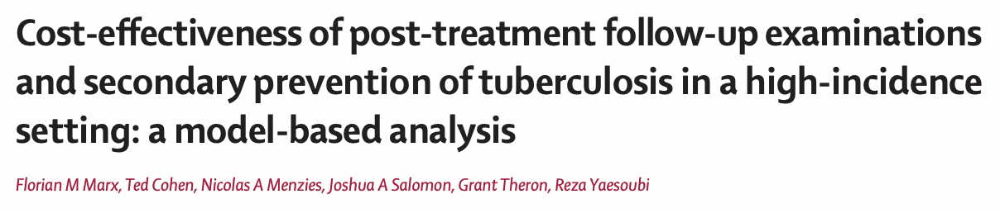Costos (bibliografía publicada)
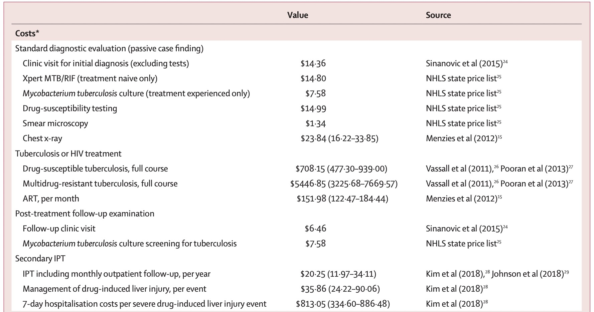Costos (Tufts CEVR)
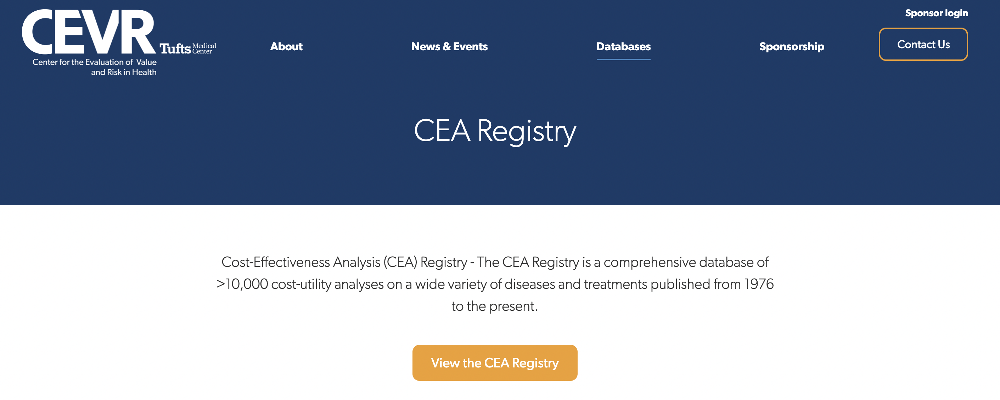https://cevr.tuftsmedicalcenter.org/databases/cea-registry
Costos (Tufts CEVR)
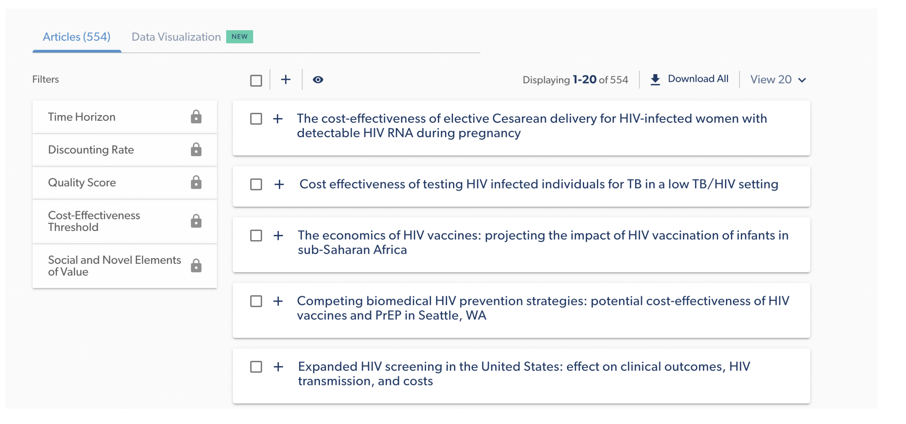Costos (Tufts CEVR)
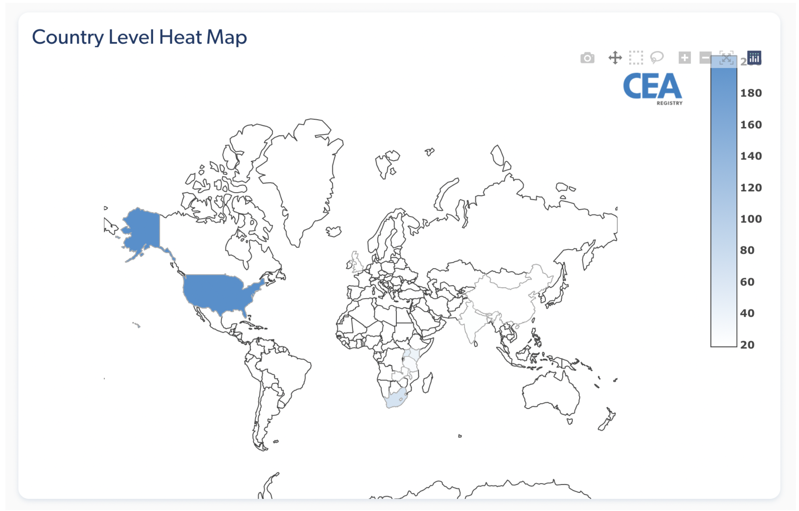Costos (Tufts CEVR)
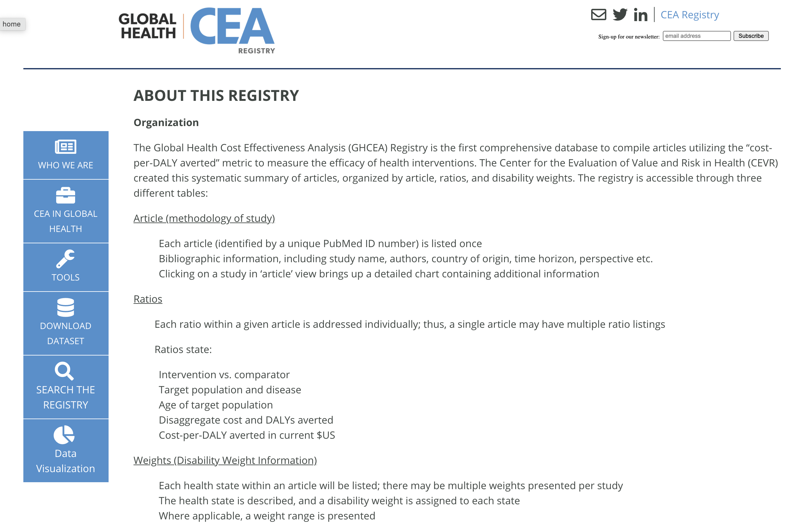http://ghcearegistry.org/ghcearegistry/
Costos (Tufts CEVR)
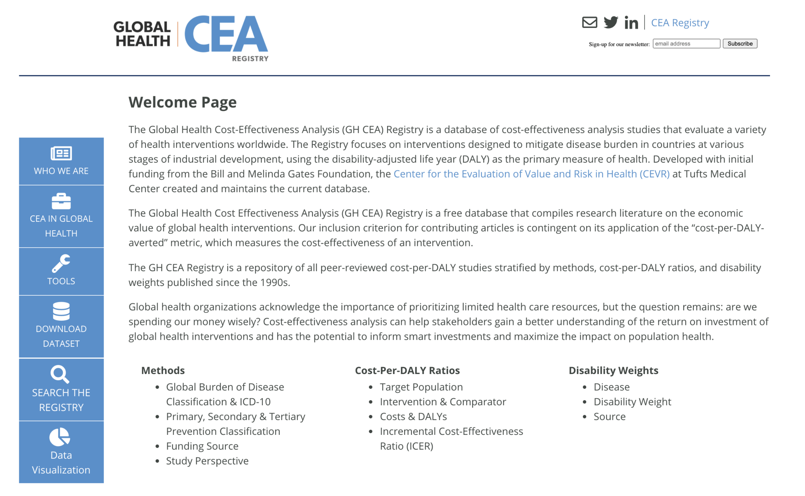Costos (DCP3)
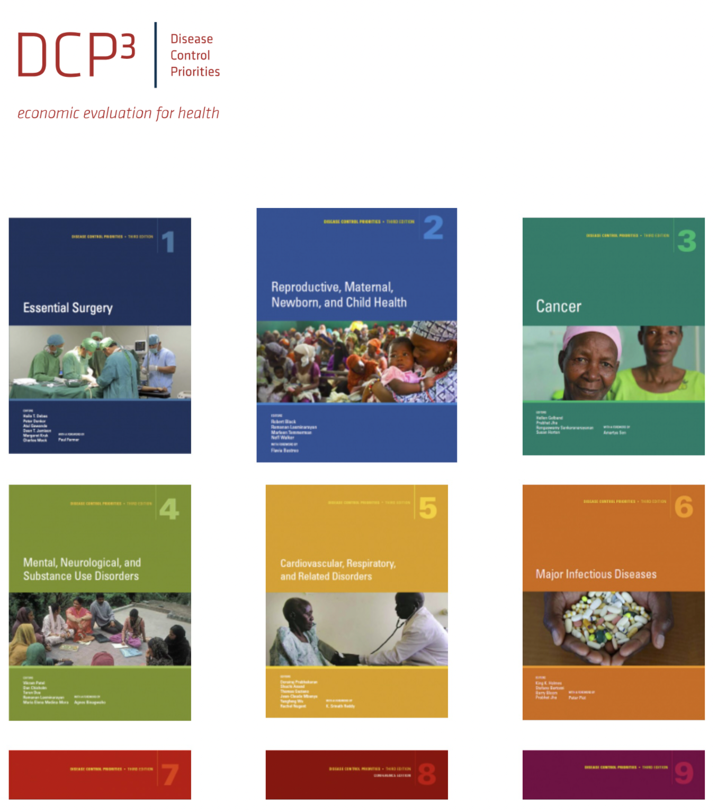Ajustes necesarios para valorar costos
Ajuste por moneda y año monetario
Descuento
Ajuste por inflación
Ajuste por inflación motivación
100 $ en 2000 no equivalen a 100 $ en 2020
¡100 $ podían comprar mucho más en 2000!
Es importante ajustar la diferencia de precios a lo largo del tiempo, especialmente cuando se trabaja con fuentes de costos de varios años
Ajuste por inflación: Ejemplo
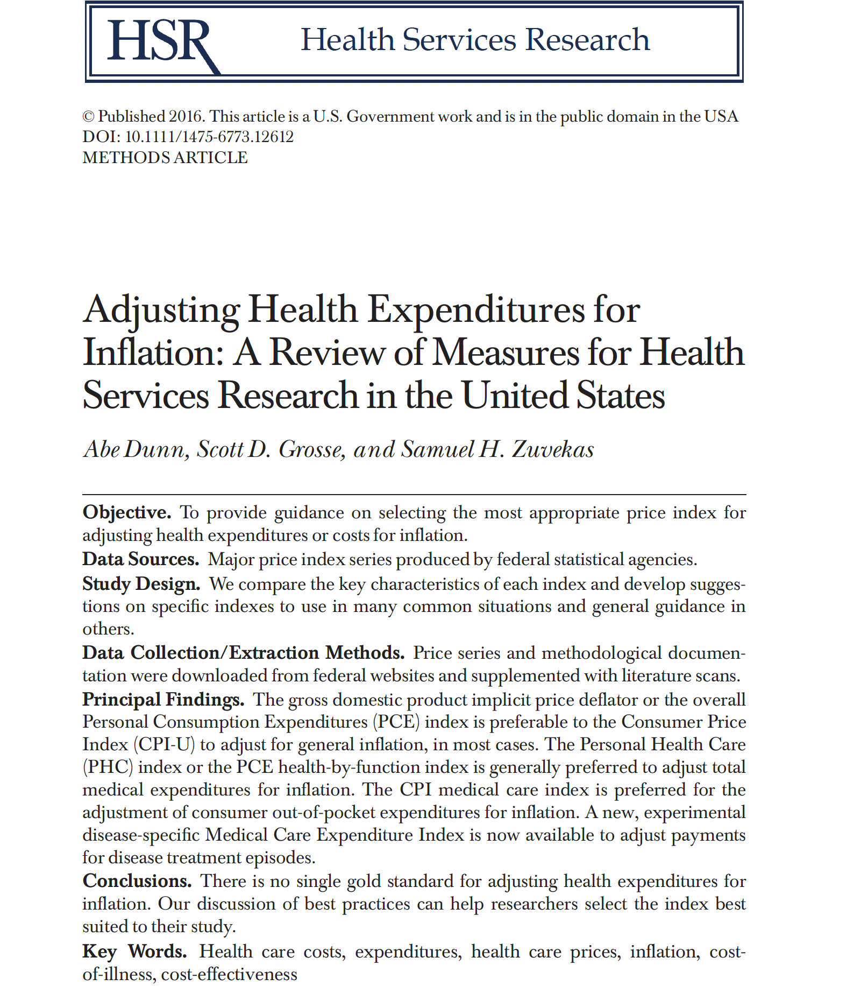Ajuste de la inflación: Método
Elija un año de referencia (normalmente el año actual de análisis)
Convertir todos los costos al año de referencia
Convertir el costo del año X al año Y (año de referencia):
\textbf{Costo(Año Y)} = \textbf{Costo(Año X)} \times \frac{\textbf{Índice de precios(Año Y)}}{\textbf{Índice de precios(Año X)}}
Ajuste por Inflación: Ejemplo
El costo de hospitalización por ictus leve en EEUU fue de ~15.000 USD en 2016. Qué pasa si queremos convertir este número a 2020 USD?
PCE (Personal Consumption Expenditure Health Price Index) en 2016: 105,430 (segunda columna de la Tabla 3 (PCE, salud)
PCE en 2020: 112,978
\textbf{Costo(2020)} = \textbf{Costo(2016)} \times \frac{\textbf{PCE(2020)}}{\textbf{PCE(2016)}} \\ = 15.000 veces frac {112,978} {105,430} \\ = 16.674 ¤ (2020 USD)
Conversión de monedas
Conversión de monedas
No es necesario para CEA pero puede ser útil en algunas situaciones:
- Ejemplo: puede ser necesario convertir la moneda local a USD porque porque los umbrales de costo-efectividad suelen estimarse en USD por AVAD.
¿Cómo se convierten 1.000 Nairas a USD?
Tipo de cambio actual en 2023: 1 Naira = ~0,0013 USD
1.000 Nairas = 1,3 USD
Descuento
¿Por qué descontar?
Ajustar los costos a la tasa de descuento social para reflejar la “tasa de preferencia temporal” social.
Pura preferencia temporal (“inpaciencia”)
Riesgo potencial de catástrofe en el futuro
Crecimiento económico/rentabilidad
Descuento
Descuento
Inflación: Convertimos el costo PASADO a valores actuales
Descuento: Convertimos los costos FUTUROS en valores actuales
¿Cómo descontamos?
Valor actual: VP = FV/(1+r)^t
VF = valor futuro, el costo nominal incurrido en el futuro
r = tipo de descuento anual (análogo al tipo de interés)
t = número de años en el futuro en que se incurre en el costo
Consenso razonable en torno al 3% anual
Puede variar según las directrices de cada país
Ajustar primero por inflación y moneda, luego descontar
Intuición
r = 0.03
Recordemos que PV = FV/(1+r)^t, y estamos en el Año 0:
$1 en el año 0 se valora como 1/1.03^0 = \$ 1
- $1 en el año 1 se valora como 1/1.03^1 = \$0,97
1$ en el año 2 se valora como 1/1,03^2 = $0,94
1$ en el año 3 se valora como 1/1,03^3 = $0,92.
…
Es decir, estamos convirtiendo lo que sería un $1 en el Año 2, por ejemplo, al VALOR PRESENTE de hoy. Hoy será 0,94.
Ejemplo
- Supongamos que en el año 5, un paciente desarrolla una enfermedad, y hay un costo del tratamiento de 500
- Este es el valor futuro (VF) del costo
- Valor actual PV = PV = FV/(1+r)^t = 500/(1+0.03)^5 = \$ 431.3